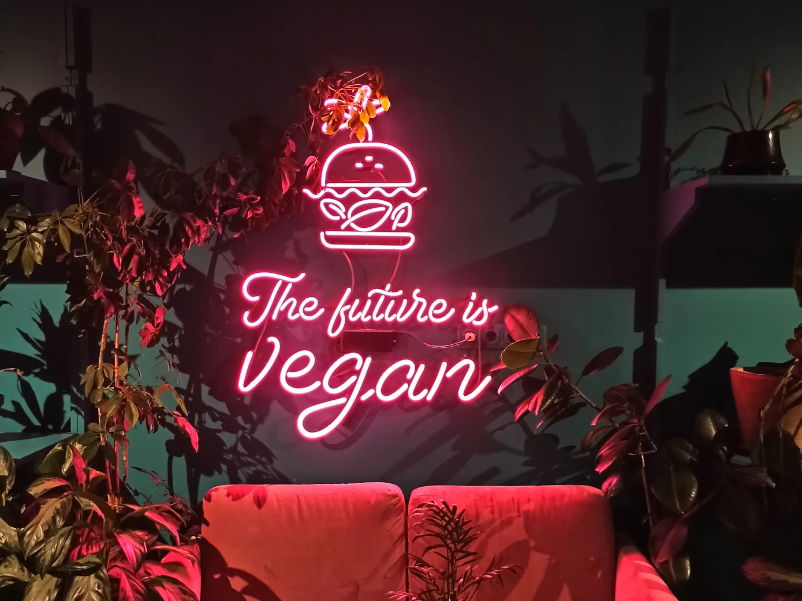

Zdrowy weganizm: od czego zacząć
Większość problemów, które ludzie nazywają „weganizm mi nie posłużył", to nie reakcja na dietę roślinną, lecz skutek dwóch błędów: usunięto produkty, ale niczym ich nie zastąpiono, oraz przeszło się zbyt gwałtownie.

Artykuł w skrócie: Witamina B12 — obowiązkowo. Witamina D jesienią i zimą. Rośliny strączkowe i pełne ziarna codziennie. Źródła wapnia: wzbogacane mleko roślinne, sezam, chia. Źródła żelaza: strączki, kasze, nasiona; razem z witaminą C. Jod: sól jodowana. Omega-3: mielone siemię lniane albo suplement z alg. Strączki wprowadzać stopniowo, inaczej pojawią się wzdęcia. Przed przejściem warto zrobić badania, żeby za rok było z czym porównać.
Co więc zastąpić, w jakim tempie i jakie wskaźniki warto śledzić?
Część 1. O czym w ogóle mowa
Weganizm to rezygnacja z wyzysku zwierząt na tyle, na ile jest to praktycznie możliwe. Sformułowanie należy do organizacji The Vegan Society. Dotyczy nie tylko jedzenia: ubrań, kosmetyków, chemii gospodarczej, rozrywki.
Dieta roślinna dotyczy wyłącznie jedzenia. Człowiek może jeść roślinnie z powodów zdrowotnych i przy tym nosić skórzane buty. Terminy często się myli, ale to różne rzeczy.
Wegetarianizm to rezygnacja z mięsa, ryb i żelatyny. Nabiał i jajka zostają.
Powody przejścia bywają trzy i zwykle się mieszają:
- Zwierzęta. Główny powód dla większości wegan. To stanowisko etyczne, a nie dieta.
- Klimat i środowisko. Hodowla zwierząt zajmuje więcej ziemi i wody i daje więcej gazów cieplarnianych na jednostkę jedzenia niż uprawa roślin.
- Zdrowie. Diety roślinne wiążą się z niższą częstością chorób sercowo-naczyniowych i cukrzycy typu drugiego. Słowo „wiążą się" jest tu ważne: to statystyka dla grup ludzi, a nie gwarancja dla konkretnej osoby. Źle zaplanowana dieta wegańska nie jest zdrowsza od zwykłej.
Część 2. Co zrobić przed przejściem
Zrobić badania
Przed przejściem, a nie po. Chodzi o to, żeby uzyskać punkt odniesienia: jeśli za rok coś spadnie, będzie z czym porównać. Wiele osób przychodzi do weganizmu już z niskim żelazem albo niską B12 — wtedy niedobór ujawni się szybciej, a zostanie przypisany weganizmowi.
Minimalny zestaw:
- morfologia krwi;
- ferrytyna (białko, w którym magazynowane jest żelazo; pokazuje zapasy, w odróżnieniu od hemoglobiny, która spada dopiero na późnym etapie);
- witamina B12;
- witamina D;
- TSH — hormon tyreotropowy, podstawowe badanie tarczycy.
Dodatkowo, jeśli jest taka możliwość: homocysteina, folian, enzymy wątrobowe, profil lipidowy.
Ustalić, czy potrzebny jest lekarz
Warto porozmawiać z lekarzem albo dietetykiem przed przejściem, jeśli to o tobie:
- ciąża lub karmienie piersią;
- przejście planowane jest dla dziecka;
- choroba przewlekła (cukrzyca, choroby nerek, stany autoimmunologiczne);
- stałe przyjmowanie leków;
- każdy stan z obniżoną odpornością;
- zaburzenie odżywiania w przeszłości lub obecnie.
To nie znaczy „nie wolno". To znaczy, że dietę trzeba będzie zaplanować dokładniej i lepiej nie robić tego w pojedynkę.
Nie robić wszystkiego naraz
Częsty schemat: człowiek postanawia przejść na weganizm i jednocześnie rezygnuje z cukru, glutenu, oleju, przechodzi na zero waste i zaczyna biegać rano. Po trzech tygodniach wszystko się rozsypuje, a wniosek dotyczy weganizmu.
Przejście na dietę roślinną to samodzielny etap. Resztę można dodać później, jeśli będzie ochota.
Część 3. Tempo przejścia
Dodawać, a nie usuwać
Najlepiej działające nastawienie na pierwsze miesiące: myśleć nie „z czego rezygnuję", tylko „co dodaję". Praktycznie znaczy to najpierw wprowadzić do diety strączki, pełne kasze, orzechy, nasiona, tofu, wzbogacane mleko roślinne. Produkty odzwierzęce wypierają się same, bo miejsce na talerzu jest zajęte.
Odwrotna kolejność — najpierw usunąć, potem zastanawiać się, czym zastąpić — prowadzi do tego, że człowiek przez dwa miesiące je sałatki, nie najada się i rzuca.
Zacząć od śniadania
Śniadanie najłatwiej zrobić roślinnym: jest jednorodne, przygotowuje się je w domu i nie wymaga uzgodnień z rodziną. Owsianka na wzbogacanym mleku, tosty z hummusem, smoothie, jajecznica z tofu. Kiedy śniadanie działa automatycznie, można zabrać się za obiad.
Nauczyć się 6–8 dań
Przeciętny człowiek je około ośmiu dań w kółko i dodaje nowe kilka razy w roku. Przejście na weganizm nie znaczy wymyślania nowej kolacji codziennie. Wystarczy znaleźć sześć do ośmiu dań roślinnych, które ci smakują i które gotujesz bez zastanowienia. Dalej można rozszerzać albo i nie.
Zarezerwować czas
Przez pierwsze kilka tygodni gotowanie zajmuje więcej czasu: nieznane produkty, czytanie składów, nowe przepisy. To tymczasowe, ale ten czas trzeba wpisać do grafiku z wyprzedzeniem, inaczej wieczorem zamiast kolacji będzie byle co.
Trzymać zapas
Lista tego, co warto trzymać w domu na stałe:
- kasze: płatki owsiane, kasza gryczana, brązowy ryż, komosa ryżowa, pełnoziarnisty makaron;
- strączki: soczewica (czerwona i zielona), ciecierzyca, fasola — suche i w puszkach;
- pomidory w puszce;
- orzechy i nasiona: słonecznik, pestki dyni, len, sezam, orzech włoski;
- tahini albo inne masło orzechowe;
- wzbogacane mleko roślinne;
- tofu;
- przyprawy;
- mrożone warzywa.
Puszka ciecierzycy i puszka pomidorów w szafce to kolacja w dwadzieścia minut w ten wieczór, kiedy nie ma już sił.
Wprowadzać strączki stopniowo
Gwałtowne zwiększenie ilości strączków daje wzdęcia. Mechanizm omówiony jest w części 13, tutaj schemat wprowadzania:
| Okres | Ile strączków dziennie |
|---|---|
| Tygodnie 1–2 | 1–2 łyżki |
| Tygodnie 3–4 | ćwierć szklanki |
| Tygodnie 5–8 | pół szklanki |
| Dalej | szklanka i więcej |
Schemat jest orientacyjny. Kierować się trzeba samopoczuciem: jeśli przy obecnej ilości nie ma dyskomfortu, można zwiększać.
Część 4. Z czego składa się wegański talerz
Główna zasada brzmi tak: usunąłeś produkt — postaw na jego miejsce zamiennik.
Zamiennik to nie odpowiednik w smaku, tylko źródło tych samych składników odżywczych. Nabiał dawał wapń, mięso — żelazo, białko i B12, jajka — białko. Dopóki to nie zostanie zastąpione, dieta nie jest pełna, nawet jeśli wygląda zdrowo.
Pięć grup, które powinny być w diecie każdego dnia:
- Strączki — soczewica, ciecierzyca, fasola, groch, soja, tofu, tempeh, orzeszki ziemne. Białko, żelazo, cynk, błonnik.
- Pełne ziarna — owies, gryka, brązowy ryż, komosa ryżowa, pełnoziarnisty chleb i makaron. Białko, witaminy z grupy B, błonnik.
- Warzywa i owoce — witaminy, minerały, błonnik. Ciemnozielone liściaste osobno: wapń, żelazo, folian.
- Orzechy i nasiona — tłuszcze, wapń (sezam, chia, mak), omega-3 (len, orzech włoski), selen (orzech brazylijski), cynk (pestki dyni).
- Wzbogacane mleko roślinne — wapń, często witaminy B12 i D. Sprawdzaj skład: nie każde mleko jest wzbogacane.
Wzór na jeden posiłek: kasza lub inne źródło węglowodanów + strączki + warzywa + źródło tłuszczu. Na przykład: kasza gryczana, gulasz z soczewicy, sałatka, łyżka tahini. Albo makaron, fasola w sosie pomidorowym, brokuły, oliwki.
Część 5. Białko
Jak jest zbudowane
Białko składa się z aminokwasów. Jest ich dwadzieścia i łączą się w łańcuchy jak koraliki na nitce. Z dwudziestu rodzajów koralików można ułożyć nieograniczoną liczbę różnych łańcuchów: kolagen, hemoglobinę, enzymy, hormony.
Kluczowy moment: białko z jedzenia nie wbudowuje się w ciało w takiej postaci, w jakiej jest. W żołądku i jelitach zostaje rozłożone na pojedyncze aminokwasy i dopiero z nich organizm składa własne białka. Aminokwasy nie bywają zwierzęce i roślinne — cząsteczka lizyny jest ta sama, czy pochodzi z soczewicy, czy z wołowiny.
Dziewięć aminokwasów z dwudziestu nazywa się niezbędnymi: organizm nie umie ich sam wytworzyć, muszą przychodzić z jedzeniem. Resztę potrafi zsyntetyzować.
Czym jest „pełnowartościowe białko"
Twierdzenie „białko roślinne jest niepełnowartościowe" opiera się na realnym fakcie, ale wnioski z niego wyciąga się błędne.
Fakt jest taki: w pojedynczym produkcie roślinnym jeden z niezbędnych aminokwasów jest zwykle reprezentowany skąpo. Nazywa się go ograniczającym — bo ogranicza składanie białka. Składanie idzie, dopóki starcza wszystkich dziewięciu; gdy tylko jeden się skończy, proces się zatrzymuje, nawet jeśli pozostałych ośmiu jest w nadmiarze.
W strączkach jest mało metioniny. W zbożach mało lizyny. Jeśli jeść tylko soczewicę — zabraknie metioniny. Jeśli tylko chleb — lizyny.
Rozwiązanie jest proste: te produkty uzupełniają się nawzajem. Takie pary nazywa się białkami komplementarnymi. Strączki plus zboża zamykają cały zestaw.
Główna zasada diety roślinnej: codziennie jeść i strączki, i pełne ziarna.
Kiedyś uważano, że trzeba je łączyć w jednym posiłku. Teraz ten wymóg został zniesiony: organizm utrzymuje pulę wolnych aminokwasów, a produkty można jeść o różnych porach dnia. Wystarczy, żeby obie grupy były w diecie danego dnia.
Ile potrzeba
1 gram białka na kilogram masy ciała na dobę. Przy wadze 60 kg to 60 g białka, przy wadze 75 kg — 75 g.
Minimalny próg to 0,8 g na kg: przy 60 kg to 48 g. Niżej schodzić nie warto. Weganom lepiej celować w 1 g, a nie w 0,8: białko roślinne przyswaja się nieco gorzej od zwierzęcego i zapas idzie właśnie na to.
Przy treningu siłowym norma jest wyższa — 1,4–1,7 g na kg.
Skąd brać
Białko na 100 g gotowego produktu:
| Produkt | Białko |
|---|---|
| Tofu | 12–16 g |
| Tempeh | 19 g |
| Soczewica gotowana | 9 g |
| Ciecierzyca gotowana | 9 g |
| Fasola gotowana | 8–9 g |
| Komosa ryżowa gotowana | 4,5 g |
| Kasza gryczana gotowana | 4 g |
| Płatki owsiane suche | 13 g |
| Masło orzechowe | 25 g |
| Pestki dyni | 25 g |
| Seitan | 25 g |
| Mleko sojowe | 3 g |
Dla orientacji: talerz zupy z soczewicy, porcja tofu i garść pestek to już około połowy dziennej normy dla osoby ważącej 60 kg.
Soja jest bezpieczna. Obawy dotyczące fitoestrogenów i hormonów nie potwierdziły się w badaniach na ludziach; przeglądy z ostatnich lat pokazują efekt albo neutralny, albo ochronny. To ustalony wniosek, a nie sporna kwestia.
Jeśli liczyć
Przez pierwsze dwa-trzy tygodnie białko i tłuszcze warto policzyć — w aplikacji takiej jak Cronometer albo FatSecret. Cel to nie kontrola, tylko kalibracja: prawie wszyscy, którzy liczą po raz pierwszy, odkrywają, że białka w diecie jest dwa razy mniej, niż się wydawało.
Po dwóch-trzech tygodniach będziesz pamiętać swoje porcje na pamięć i liczenie przestanie być potrzebne. Stałe liczenie nie jest celem, a dla wielu osób jest szkodliwe (patrz część 16).
Objawy niedoboru
Wczesne, zwykle nie kojarzone z jedzeniem:
- sucha skóra;
- włosy rosną wolniej, tracą blask, wypadają mocniej niż zwykle;
- łamliwe paznokcie.
Późniejsze:
- osłabienie i ból mięśni;
- stała ochota na słodycze;
- zmęczenie, bóle głowy, obrzęki;
- gorsze myślenie.
Każdy z tych objawów ma dziesiątki możliwych przyczyn. Ale sprawdzenie ilości białka w diecie to najprostsze, od czego można zacząć.
Jeśli strączki nie wchodzą
Przy niektórych stanach strączki są źle tolerowane nawet po długiej adaptacji. Wtedy podstawą stają się:
- komosa ryżowa i gryka — mają pełniejszy profil aminokwasowy niż inne zboża;
- białko dyniowe, konopne albo ryżowe w proszku;
- orzechy i nasiona;
- tofu i tempeh, jeśli soja jest tolerowana (fermentowany tempeh często jest tolerowany lepiej).
Białko w proszku to zwykłe jedzenie, a nie chemia sportowa. To białko oddzielone od reszty składu produktu.
Część 6. Żelazo
Na czym polega różnica
Żelazo w pożywieniu roślinnym jest niehemowe. Przyswaja się gorzej niż hemowe z mięsa: około 2–20% wobec 15–35%. Za to jego przyswajanie mocno zależy od tego, z czym zostało zjedzone, i na to można wpływać.
Z powodu gorszego przyswajania oficjalne zalecenia proponują wegetarianom i weganom mnożyć normę mniej więcej przez 1,8. Norma bazowa to 8 mg dla mężczyzn i 18 mg dla kobiet miesiączkujących. Pomnożona — około 14 i 32 mg odpowiednio.
Druga liczba jest duża i w praktyce zamiast gonić za nią rozsądniej jest śledzić ferrytynę w badaniach i pracować nad przyswajaniem.
Źródła
Soczewica, ciecierzyca, fasola, tofu, pestki dyni, sezam i tahini, płatki owsiane, kasza gryczana, suszone morele, suszone figi, ciemnozielone liściaste, kakao.
Co pomaga przyswajaniu
- Witamina C. Zwiększa przyswajanie żelaza niehemowego kilkukrotnie. Praktycznie: sok z cytryny do zupy z soczewicy, papryka do sałatki z ciecierzycą, pomarańcza po owsiance. To najprostsza dźwignia ze wszystkich.
- Namaczanie, kiełkowanie, zakwas. O tym niżej.
- Żeliwne naczynia. Trochę żelaza przechodzi do jedzenia, szczególnie przy gotowaniu potraw kwaśnych. Efekt jest niewielki, ale jest.
Co przeszkadza przyswajaniu
- Kawa i herbata. Zawarte w nich polifenole wiążą żelazo. Nie trzeba rezygnować, wystarczy rozdzielić je w czasie od posiłku — o godzinę-dwie.
- Wapń w suplementach. Wapń i żelazo w postaci tabletek przeszkadzają sobie nawzajem. Rozdzielaj przyjmowanie. Jeśli oba pochodzą z jedzenia, to nie problem: w produktach pełnowartościowych ich dawki są takie, że wzajemne blokowanie nie zachodzi.
- Kwas fitynowy. Omówiony niżej.
Kwas fitynowy
To substancja, w której rośliny magazynują fosfor. Jest we wszystkich kaszach, strączkach, orzechach i nasionach. Wiąże żelazo, cynk i wapń oraz obniża ich dostępność dla organizmu.
Co się z tym robi:
- Namaczanie. Kasze, strączki, orzechy i nasiona — na noc w zwykłej wodzie, wodę wylać. To uruchamia własny enzym rośliny, fitazę, która rozkłada kwas fitynowy.
- Kiełkowanie. Działa silniej niż namaczanie.
- Zakwas. Najskuteczniejszy z trzech sposobów. Chleb na zakwasie zawiera zauważalnie mniej kwasu fitynowego niż na drożdżach.
Wielkość efektu w różnych badaniach się różni, ale kierunek jest stały. Dodatkowy bonus namaczania — strączki lepiej się trawią i mniej wzdymają.
Kwas fitynowy nie jest trucizną. Ma też pożyteczne właściwości, w tym antyoksydacyjne. Zadaniem nie jest usunąć go całkowicie, tylko nie budować diety wyłącznie z nieprzetworzonych kasz i strączków.
Na co patrzeć w badaniach
Hemoglobina spada późno, kiedy zapasy są już zużyte. Wczesny wskaźnik to ferrytyna. Formalnie za normę uznaje się wartości od 15–30 ng/ml, ale przy wartościach poniżej 30 wiele osób już odczuwa osłabienie i wypadanie włosów. To warto omówić z lekarzem.
Część 7. Wapń
Norma
1000 mg na dobę dla osoby dorosłej. Po 50. roku życia — 1200 mg.
Skąd brać
| Źródło | Wapń |
|---|---|
| Wzbogacane mleko roślinne | 120 mg na 100 ml (szklanka — około 300 mg) |
| Tofu ścinane wapniem | 200–350 mg na 100 g |
| Mak | około 1400 mg na 100 g |
| Sezam niełuskany, tahini | około 900 mg na 100 g |
| Chia | 630 mg na 100 g |
| Migdały | 260 mg na 100 g |
| Jarmuż | 150 mg na 100 g |
| Fasola biała | około 100 mg na 100 g gotowej |
| Brokuły | 47 mg na 100 g |
Dwa uściślenia do tabeli.
Nie każde tofu się liczy. Wapń jest w nim tylko wtedy, gdy przy produkcji użyto siarczanu wapnia. Sprawdzaj skład: siarczan wapnia albo E516. Tofu na nigari (chlorku magnezu) prawie nie zawiera wapnia.
Szpinak jest słabym źródłem wapnia, choć w tabelach ma przyzwoitą liczbę. Zawiera dużo szczawianów — substancji, które wiążą wapń tak mocno, że przyswaja się około 5%. Z jarmużu, brokułów i kapusty pekińskiej przyswaja się 50–60%. Szpinak jest dobry z innych powodów, ale wapń z niego się nie liczy.
Wzbogacane mleko trzeba wstrząsać. Wapń nie jest w nim rozpuszczony, tylko zawieszony, i osiada na dnie opakowania. Jeśli nalewać bez wstrząśnięcia, znaczna część wapnia zostanie w kartonie.
O badaniu krwi na wapń
Nie pokazuje, czy wapnia w diecie wystarcza. Poziom wapnia we krwi organizm utrzymuje stały za wszelką cenę, bo od niego zależy skurcz mięśni, w tym serca, i przekazywanie sygnałów nerwowych. Jeśli wapń nie przychodzi z jedzeniem, ciało bierze go z kości.
Dlatego badanie może być idealne przy wieloletnim niedoborze w diecie. Skutki widać nie we krwi, tylko w kościach: łamliwe paznokcie, problemy z zębami, w zaawansowanych przypadkach osteoporoza. Stan kości ocenia się densytometrią, a nie badaniem krwi.
O suplementach wapnia
Wapń w suplementach to nie pierwszy wybór, a to z dwóch powodów.
- Najpierw witamina D. Bez niej wapń nie przyswaja się normalnie. Przyjmowanie suplementów wapnia przy nieskorygowanym niedoborze witaminy D jest bezsensowne i potencjalnie szkodliwe.
- Nie przekraczać normy. Nadmiar wapnia z suplementów wiąże się z odkładaniem wapnia w naczyniach. Nie warto wychodzić poza normę dobową więcej niż półtora raza, licząc razem jedzenie i suplementy.
Działający wariant dla większości: szklanka wzbogacanego mleka dziennie plus regularnie sezam, tahini, chia i zielone warzywa. To wystarczy bez suplementów.
Część 8. Witamina B12
To jedyny punkt listy, gdzie nie ma wariantów: suplement trzeba przyjmować obowiązkowo.
Dlaczego
Witaminę B12 produkują bakterie. Nie ma jej w żadnym produkcie roślinnym. Organizm ludzki nie umie jej syntetyzować.
Zwierzęta roślinożerne dostają B12 od bakterii we własnym przewodzie pokarmowym i z ziemi na paszy. W hodowli przemysłowej to nie wystarcza i B12 dodaje się zwierzętom do paszy. Czyli znaczna część B12 w mięsie to ten sam suplement, tylko przepuszczony przez zwierzę.
O argumencie „bakterie w jelicie ją wytwarzają"
Wytwarzają, ale nie w tym odcinku jelita.
Bakterie produkujące B12 żyją w jelicie grubym. B12 wchłania się w jelicie cienkim — czyli wyżej w biegu. Jelito pracuje w jedną stronę i to, co wyprodukowano w jelicie grubym, nie trafi z powrotem do cienkiego. Ile dokładnie B12 produkują te bakterie, też nie wiadomo.
O argumencie „nie przyjmuję, a badania mam dobre"
B12 magazynuje się w wątrobie, a zapasu starcza na okres od kilku miesięcy do kilku lat. U osoby, która niedawno przestała jeść produkty odzwierzęce, badania będą w normie po prostu dlatego, że zużywany jest stary zapas.
Druga sprawa — co uznać za dobry wynik. Laboratoryjna norma referencyjna zwykle zaczyna się mniej więcej od 190 pg/ml, ale dolna część tego zakresu wiąże się już z objawami. Rozsądniej celować w wartości powyżej 400 pg/ml. Dokładniejszy obraz daje badanie homocysteiny albo kwasu metylomalonowego.
Co robi B12
Witamina B12 ma trzy główne zadania.
Synteza DNA. Bez niej podział komórek przebiega z błędami. Pierwsze cierpią tkanki, które odnawiają się najszybciej — szpik kostny i błony śluzowe.
Produkcja erytrocytów — czerwonych krwinek, które roznoszą tlen po ciele.
Utrzymanie mieliny — osłonki włókien nerwowych. Mielina działa jak izolacja na przewodzie: bez niej sygnał idzie z zakłóceniami.
Jest i czwarte zadanie, mniej oczywiste. B12 przeprowadza folian (witaminę B9) w formę roboczą. Dopóki to nie nastąpi, folian jest bezużyteczny, ile by go nie było w jedzeniu. Dlatego niedobór B12 i niedobór folianu zwykle idą razem.
Szpikowi kostnemu potrzebny jest aktywny folian, żeby prawidłowo dzielić komórki krwi. Kiedy go nie ma, podział się rozstraja i do krwi wychodzą niedojrzałe erytrocyty — duże i niezdolne normalnie przenosić tlenu. Ten stan nazywa się niedokrwistością megaloblastyczną. Stąd bladość, duszność i stałe zmęczenie.
Niedokrwistość jest odwracalna: mija, kiedy B12 zaczyna napływać. Gorsze jest co innego — równolegle niszczona jest mielina. Pojawia się drętwienie, mrowienie w rękach i nogach, zaburzenia równowagi, problemy z pamięcią. Jeśli niedobór trwa długo, te uszkodzenia mogą zostać na zawsze.
Objawy niedoboru
Wczesne, zwykle zrzucane na zmęczenie:
- osłabienie, zmęczenie;
- duszność przy zwykłym wysiłku;
- rozdrażnienie;
- bóle głowy;
- zaburzenia rytmu serca;
- bladość.
Neurologiczne, po nich niedobór B12 rozpoznaje się najdokładniej:
- drętwienie i mrowienie w rękach i nogach;
- drgania mięśni;
- zaburzenia równowagi;
- pogorszenie pamięci i koncentracji.
Ważny szczegół: uszkodzenia neurologiczne przy długim niedoborze mogą stać się nieodwracalne, podczas gdy niedokrwistość się leczy. Dlatego nie trzeba czekać na objawy.
Homocysteina
Homocysteina to aminokwas, produkt uboczny przemiany materii. W normie B12 i folian przekształcają ją w metioninę. Kiedy B12 brakuje, homocysteina gromadzi się we krwi. Podwyższony poziom wiąże się z pogrubieniem ścian naczyń i podwyższonym ryzykiem zakrzepów.
Norma w większości laboratoriów to do 10–15 µmol/l, za optymalną uznaje się wartość poniżej 10. U wegan, którzy nie przyjmują B12, rejestruje się wartości wielokrotnie wyższe od normy. To jeden z najbardziej wiarygodnych pośrednich markerów statusu B12.
Ile przyjmować
Standardowy schemat dla osoby dorosłej:
- 25–100 µg cyjanokobalaminy (B12) codziennie, albo
- 1000 µg dwa razy w tygodniu.
Dawki wyglądają ogromnie na tle zapotrzebowania dobowego (około 2,4 µg) i to jest normalne: przy jednorazowym przyjęciu przyswaja się tylko niewielka część.
Forma — cyjanokobalamina: jest najlepiej zbadana, stabilna i tańsza. Metylokobalamina też działa, ale danych o niej jest mniej. Tabletki lepiej rozpuszczać w ustach albo rozgryzać: część B12 wchłania się już w błonie śluzowej jamy ustnej.
Nie ma niebezpieczeństwa przedawkowania: B12 jest rozpuszczalna w wodzie, nadmiar wydala się z moczem. Osobny przypadek to choroby nerek, tam dawkę trzeba omówić z lekarzem.
Produkty wzbogacane (mleko roślinne, płatki drożdżowe z B12) liczą się, ale poleganie tylko na nich jest trudne: żeby zebrać normę, trzeba je jeść w kilku posiłkach każdego dnia. Prościej wziąć tabletkę.
Część 9. Witamina D
Witaminę D często zalicza się do substancji, które traci się razem z produktami odzwierzęcymi. To nieścisłe: jej głównym źródłem dla człowieka nie jest jedzenie, tylko synteza w skórze pod wpływem ultrafioletu.
Na szerokościach powyżej 40. równoleżnika od października do marca słońce stoi zbyt nisko i skóra praktycznie nie produkuje witaminy D. Niedobór na tych szerokościach jest zjawiskiem masowym, a weganie niczym się tu nie różnią od wszystkich pozostałych.
Źródła roślinne: grzyby hodowane pod ultrafioletem (w składzie zwykle jest to podane) oraz produkty wzbogacane. Zwykłe pieczarki ze sklepu praktycznie nie zawierają witaminy D, ale można je potrzymać w bezpośrednim słońcu — synteza uruchamia się też w zerwanych grzybach.
Dawki. Osobom dorosłym w okresie jesienno-zimowym zwykle zaleca się 1000–2000 IU na dobę. Przy potwierdzonym niedoborze dawki są wyższe i dobiera się je na podstawie badań. Witamina D jest rozpuszczalna w tłuszczach, gromadzi się w organizmie i przedawkowanie jest możliwe, dlatego przepisywanie sobie wysokich dawek na oślep nie jest dobrym pomysłem.
Forma. D3 przyswaja się lepiej niż D2. Zwykłą D3 robi się z lanoliny — substancji tłuszczowej pozyskiwanej z owczej wełny. Taka D3 nie jest wegańska. Wegańską D3 produkuje się z porostów, na opakowaniu jest to podane. Jeśli takiej nie ma — D2 też działa, tylko gorzej.
Witamina K2. Często idzie w parze z D w suplementach. Jej rolą jest kierować wapń do kości, a nie do naczyń. Wegańska forma K2 (MK-7) produkowana jest z fermentowanej soi. Dane o konieczności suplementu są mniej twarde niż dla B12 i D; to rozsądna opcja, a nie punkt obowiązkowy.
Część 10. Omega-3
Omega-3 to rodzina kwasów tłuszczowych. Są trzy i na tym polega sedno sprawy.
- ALA (kwas alfa-linolenowy) — jest w roślinach: len, chia, orzech włoski, nasiona konopi, olej rzepakowy.
- EPA i DHA — te, które potrzebne są mózgowi, siatkówce i naczyniom. W roślinach ich nie ma.
Organizm potrafi przekształcać ALA w EPA i DHA, ale stopień przekształcenia jest niski: kilka procent dla EPA i poniżej procenta dla DHA. Różni się u różnych osób i zależy od genetyki.
Co z tego wynika:
- Łyżka mielonego siemienia lnianego dziennie. Właśnie mielonego — całe nasiono przechodzi przez jelito nietrawione. Lepiej mielić małymi porcjami i przechowywać w lodówce: mielony len szybko się utlenia.
- Dodatkowo — chia, orzechy włoskie, nasiona konopi.
- Olej z alg — bezpośrednie źródło EPA i DHA, bez pośredniego przekształcania. To właśnie z alg ryby biorą swoje omega-3. Zwykła dawka to 200–300 mg EPA i DHA na dobę.
Jeszcze jedna dźwignia to omega-6. Te kwasy tłuszczowe konkurują z omega-3 o te same enzymy. W oleju słonecznikowym, kukurydzianym i sojowym omega-6 jest bardzo dużo, a w zwykłej diecie jest ich nadmiar. Zmniejszenie ilości tych olejów daje niemal ten sam efekt, co dodanie omega-3. Oliwa i olej rzepakowy są pod tym względem lepsze.
Część 11. Jod, selen, cynk
Jod
Potrzebny tarczycy. Norma to 150 µg na dobę, w ciąży więcej.
Proste i przewidywalne źródło to sól jodowana. Gram takiej soli daje mniej więcej 20–30 µg jodu.
Z algami morskimi jest trudniej. Jodu jest w nich dużo, ale ilość jest nieprzewidywalna: rozrzut między partiami tego samego produktu bywa dziesięciokrotny. Listownica (kelp) jest pod tym względem szczególnie niebezpieczna — jedna porcja może dać wielodniową normę. Nadmiar jodu zaburza pracę tarczycy tak samo jak niedobór. Nori jest względnie bezpieczna, listownicy jako stałego źródła lepiej nie używać.
Osobna sprawa: sól himalajska i morska nie są wzbogacane jodem. Jeśli przeszłaś na nie ze zwykłej jodowanej, źródło jodu z diety zniknęło.
Selen
Potrzebny tarczycy i ochronie antyoksydacyjnej. Norma to 55 µg na dobę.
Orzech brazylijski — jeden-dwa orzechy dziennie zamykają normę całkowicie. Zawartość selenu w nich mocno się waha w zależności od gleby, a garść orzechów może dać nadmiar. Selen jest toksyczny w dużych dawkach. Jeden-dwa orzechy, nie więcej.
Cynk
Norma to 8 mg dla kobiet i 11 mg dla mężczyzn. Weganom zaleca się mniej więcej o 50% więcej, bo kwas fitynowy przeszkadza przyswajaniu.
Źródła: pestki dyni, strączki, orzechy, pełne kasze, tofu. Namaczanie i zakwas zwiększają przyswajanie — ten sam mechanizm, co przy żelazie.
Część 12. Suplementy: krótkie podsumowanie
Potrzebne wszystkim weganom:
| Co | Ile |
|---|---|
| B12 | 25–100 µg dziennie albo 1000 µg dwa razy w tygodniu |
| Witamina D | 1000–2000 IU w okresie jesienno-zimowym, dalej według badań |
Warto rozważyć:
| Co | Komu |
|---|---|
| Omega-3 z alg | Wszystkim, którzy nie jedzą regularnie lnu i orzechów włoskich; kobietom w ciąży — koniecznie omówić z lekarzem |
| Jod | Jeśli w diecie nie ma soli jodowanej |
| Żelazo | Tylko na podstawie badań i z zalecenia lekarza |
| Wapń | Jeśli z jedzenia stale się nie zbiera |
| K2 | W parze z D, opcjonalnie |
Niepotrzebne:
Spirulina, chlorella, chlorofil, maca peruwiańska, lecytyna słonecznikowa, proszki „detoks", kolagen, wszelkie „superfoods". Większość z nich nie ma udowodnionej skuteczności, żadna organizacja zdrowia ich nie zaleca, a spirulina dodatkowo tworzy niebezpieczną iluzję: zawiera pseudo-B12 — substancję, która przypomina B12, pokazuje się w niektórych badaniach jako B12, ale nie jest wykorzystywana przez organizm. Człowiek może latami „przyjmować B12" ze spiruliny i mieć niedobór.
Osobno: żelaza bez zalecenia lekarza przyjmować nie należy. Nadmiar żelaza jest toksyczny, a organizm nie umie go aktywnie usuwać.
Część 13. Wzdęcia i adaptacja jelit
Wzdęcia w pierwszych tygodniach to częsty powód, dla którego ludzie rzucają.
Co się dzieje
W jelicie żyją bakterie — dziesiątki bilionów. Jedne pomagają trawieniu, produkują niektóre witaminy i wspierają odporność. Inne w nadmiarze wywołują gazy, zaburzenia stolca i dyskomfort.
To, co dokładnie jedzą, określa ich liczebność. Pożyteczne bakterie żywią się błonnikiem. Błonnik jest w strączkach, kaszach, warzywach i owocach — i nie ma go w mięsie, nabiale, cukrze i większości przetworzonego jedzenia.
Zalecana norma błonnika to 25–30 g na dobę. W typowej diecie wychodzi mniej więcej dwa razy mniej. Przy takim odżywianiu przez lata kolonie bakterii zdolnych przerabiać błonnik się kurczą: nie mają co jeść.
Dalej człowiek gwałtownie przechodzi na strączki i warzywa. Błonnika przychodzi kilkakrotnie więcej niż normy, a bakterii zdolnych go przerobić jest mało. Niestrawione fermentuje — stąd gazy i wzdęcia.
To nie znak, że jedzenie roślinne nie pasuje. To rozdźwięk między tym, co przyszło, a tym, czym to trawić.
Co robić
- Zwiększać stopniowo. Schemat w części 3. Jelito się adaptuje, ale nie w tydzień.
- Namaczać strączki — na noc, wodę wylać, gotować w świeżej. To usuwa część oligosacharydów — tych cukrów, które bakterie fermentują.
- Dobrze rozgotowywać. Niedogotowane strączki wzdymają mocniej.
- Zaczynać od tych łatwiejszych. Czerwona soczewica (rozgotowuje się i nie ma łupiny) oraz tofu są znoszone łatwiej niż fasola i ciecierzyca.
- Dodawać przyprawy. Kmin rzymski, koper włoski, kolendra, asafetyda, imbir tradycyjnie używane są ze strączkami właśnie dlatego.
- Usunąć cukier i przetworzone jedzenie przynajmniej na czas przejścia. Połączenie dużej ilości cukru, tłuszczu i soli przy całkowitym braku błonnika to najgorszy z możliwych wariantów dla mikroflory. Alkohol jest na tej samej liście.
- Ruszać się. Regularny wysiłek aerobowy wiąże się z większą różnorodnością mikroflory jelitowej. Trzy razy w tygodniu wystarczy.
- Pić wodę. Przy wzroście ilości błonnika bez dostatecznej ilości wody wychodzi efekt odwrotny — zaparcie.
Probiotyki same z siebie problemu nie rozwiązują. Zasiedlanie bakterii w jelicie, gdzie nie mają co jeść, jest bezsensowne: nie przyjmą się. Probiotyki mogą być częścią planu, ale działa tylko połączenie „usunąć przetworzone + stopniowo dodawać pełne roślinne + poczekać".
Ile czekać
Pierwsze poprawy zwykle widać po kilku tygodniach. Pełna adaptacja zajmuje od kilku miesięcy do roku. To długo i szybszego sposobu nie ma.
Kiedy iść do lekarza. Jeśli wzdęcia są silne, nie zmniejszają się przez kilka miesięcy, towarzyszy im ból, utrata wagi, krew w stolcu albo zaczynają się nagle — to nie adaptacja. Zespół jelita drażliwego, SIBO (przerost bakteryjny jelita cienkiego), celiakia i nietolerancje wymagają diagnostyki, a nie cierpliwości.
Część 14. „Nie najadam się"
Drugi co do częstości powód, żeby rzucić. Ma zwykle jedną z dwóch przyczyn i obie da się usunąć.
Przyczyna 1: nie ma białka
Prawie wszystkie produkty odzwierzęce to białko. Usuwając mięso, ryby, jajka i nabiał i nie stawiając niczego na ich miejsce, człowiek usuwa z diety białko jako kategorię.
Białko odpowiada nie tylko za mięśnie i enzymy. Odpowiada za sytość. Dieta z owoców, sałatek i warzyw sytości nie daje: po godzinie znowu chce się jeść, i zwykle słodkiego.
Co robić: przestawić priorytety. Podstawa talerza to strączki i pełne kasze, w każdym posiłku. Owoce i sałatki to dodatek, a nie baza.
Przyczyna 2: mało kalorii
Podstawowa przemiana materii to energia, którą ciało wydaje na samo swoje istnienie: oddychanie, bicie serca, pracę mózgu, utrzymanie temperatury. U dorosłej kobiety to zwykle 1200–1500 kcal na dobę. To wydatek w stanie całkowitego bezruchu. Wszystko ponad leżenie wymaga dodatkowej energii.
Jedzenie roślinne jest objętościowo większe i mniej kaloryczne: ten sam talerz daje mniej kalorii niż wcześniej. Człowiek je tyle samo objętościowo, a dostaje mniej. Stąd głód.
Długi niedobór kalorii ciało kompensuje samo — zwykle napadem na jedzenie, które można zjeść szybko i dużo.
Co robić:
- Wyliczyć swoją normę kalorii w dowolnym kalkulatorze online i jeść zgodnie z nią.
- Jeść częściej, jeśli objętość porcji stała się ograniczeniem. To normalna adaptacja, a nie słabość.
- Nie usuwać tłuszczów. Orzechy, nasiona, tahini, awokado — to gęstość kaloryczna i sytość. Dieta bez tłuszczów nie syci.
- Dodawać źródła skoncentrowane: suszone owoce, masła orzechowe, granolę.
Sytość i pełny żołądek to różne rzeczy
Najeść się to uzyskać sytość i równy poziom energii na jakieś cztery godziny. Do tego potrzebne są i kalorie, i białko, i tłuszcz.
Napchać żołądek to objętość bez wartości odżywczej. Duża miska sałatki daje uczucie pełności na czterdzieści minut, po czym ręka sięga po słodkie.
Bywają też hormonalne i psychologiczne przyczyny braku sytości. Ale zaczynać analizę warto od dwóch opisanych wyżej, bo są najczęstsze.
Część 15. Badania: co i kiedy
Przed przejściem — zestaw podstawowy (patrz część 2).
Potem raz w roku:
- morfologia krwi;
- ferrytyna;
- witamina B12, lepiej razem z homocysteiną;
- witamina D;
- TSH;
- biochemia, profil lipidowy.
Dwie rzeczy, które warto rozumieć o badaniach.
Laboratoryjna norma referencyjna to nie to samo, co optimum. Zakresy referencyjne budowane są na statystyce populacyjnej, włącznie z osobami z niedoborami subklinicznymi. Trafienie w dolną granicę zakresu oznacza „nie patologia", a nie „wszystko dobrze".
Nie przepisuj sobie suplementów na podstawie wyników samodzielnie. Zwłaszcza żelaza i witaminy D w wysokich dawkach. Wyniki powinien interpretować lekarz, który widzi cały obraz.
Część 16. Czego robić nie trzeba
Nie robić oczyszczania i detoksów. Wątroba i nerki to właśnie jest system oczyszczania organizmu i działa on bez zewnętrznych ingerencji. Programy detoks nie mają podstaw naukowych.
Nie rezygnować z glutenu, soi i cukru bez wskazań. Celiakia i alergia na soję to diagnozy, które stawia lekarz. Rezygnacja „na wszelki wypadek" zawęża i tak już zmienioną dietę i zwiększa szansę na niedobór białka i kalorii.
Nie zaczynać jednocześnie postu przerywanego. Przejście na dietę roślinną już wymaga adaptacji i uwagi na ilość jedzenia. Dodawanie do tego ograniczenia czasowego oznacza niemal pewny niedobór kalorii.
Nie przechodzić na surowe jedzenie. Obróbka termiczna czyni część składników odżywczych dostępniejszymi, a dietę surową trudno uczynić pełnowartościową pod względem kalorii i białka.
Nie gonić za superfoods. Spirulina, jagody goji, proszek acai nie zastępują diety podstawowej i kosztują dziesiątki razy więcej niż zwykłe strączki i kasze, przy mniejszej wartości odżywczej.
Osobny punkt: zachowania żywieniowe
Przestrzeń wegańska jest przepełniona ideami „oczyszczania", „czystego jedzenia" i rezygnacji. Część z tego to nie odżywianie, tylko objawy.
Objawy, przy których warto zwrócić się do specjalisty:
- strach przed jedzeniem albo przed konkretnymi produktami;
- poczucie winy i wstydu za zjedzone;
- chęć „oczyszczenia się" po jedzeniu;
- dążenie do kompensowania zjedzonego ograniczeniem po;
- sztywne zasady i rytuały wokół jedzenia i strach przed ich złamaniem;
- myśli o jedzeniu zajmują znaczną część dnia.
Rozpowszechnienie tych myśli nie czyni ich normą. Zaburzenia odżywiania to stany medyczne, mają leczenie, a zgłaszanie się z nimi do psychoterapeuty albo psychiatry jest tak samo na miejscu, jak z bólem zęba do stomatologa.
Jeśli masz albo miałaś zaburzenie odżywiania, liczenie kalorii i białka z tego tekstu ci nie odpowiada. Przejście planuje się w takim wypadku razem ze specjalistą.
Część 17. Jak czytać etykiety
Składniki odzwierzęce często kryją się pod nazwami, które nic nie mówią.
| Nazwa | Co to jest |
|---|---|
| Żelatyna | Kości i skóra zwierząt |
| Serwatka, whey | Białko mleka |
| Kazeina, kazeinian | Białko mleka |
| Laktoza | Cukier mleczny |
| Podpuszczka, rennet | Z żołądków cieląt |
| Kolagen | Tkanka łączna zwierząt |
| Ghee | Masło klarowane |
| Mleczko pszczele | Produkt pszczelarski |
| Karmin, koszenila, E120 | Barwnik z owadów |
| Szelak, E904 | Żywica wydzielana przez owady |
| Lizozym, E1105 | Z jaja kurzego |
| L-cysteina, E920 | Polepszacz mąki, bywa z piór |
| Laktitol | Pochodna cukru mlecznego |
| Kwas mlekowy, E270 | Zwykle roślinny, ale bywa mleczny |
Prościej kierować się oznaczeniem V-Label albo „vegan" na opakowaniu, ale nie ma go wszędzie. Aplikacje rozpoznające skład po kodzie kreskowym pomagają, choć bazy mają niepełne.
Napoje
Nie wszystko, co wygląda na roślinne, takie jest.
- Wino, piwo, niektóre soki klaruje się przy pomocy żelatyny, kazeiny, białka jaja albo karuku (isinglass). W składzie tego nie podają, bo substancja jest usuwana z gotowego produktu. Sprawdzić konkretną markę można na stronie Barnivore.
- Soki czasem wzbogaca się omega-3 z tranu.
- Woda, herbata, kawa, zwykłe napoje gazowane nie budzą wątpliwości.
Część 18. Zamienniki
| Zamiast | Czego użyć |
|---|---|
| Mleko krowie | Sojowe (najbliższe pod względem białka), owsiane, migdałowe, ryżowe — wzbogacane wapniem |
| Śmietana | Śmietana kokosowa, śmietana sojowa, krem z nerkowców |
| Masło | Margaryna roślinna bez mleka, masła orzechowe, awokado |
| Jogurt | Jogurt sojowy (pod względem białka bliższy zwykłemu niż kokosowy) |
| Ser | Gotowe sery roślinne, pasta z nerkowców z drożdżami spożywczymi |
| Jajko w wypiekach | Łyżka mielonego lnu plus trzy łyżki wody, odstawić na 10 minut; przecier bananowy; mus jabłkowy |
| Jajko w omlecie, jajecznicy | Tofu jedwabiste albo zwykłe tofu rozgniecione widelcem, plus kurkuma i czarna sól kala namak (daje jajeczny zapach dzięki siarce) |
| Ubite białka | Aquafaba — płyn z puszki ciecierzycy; ubija się w pianę |
| Miód | Syrop klonowy, syrop z agawy, syrop ryżowy, melasa, syrop daktylowy |
| Żelatyna | Agar-agar, pektyna |
| Mięso mielone | Soczewica, mielone sojowe, gotowe mielone roślinne |
| Mięso w kawałkach | Tofu, tempeh, seitan, kostki sojowe |
| Bulion | Bulion warzywny, suszone grzyby, miso |
| Serowy smak | Drożdże spożywcze (nutritional yeast) — płatki o orzechowo-serowym posmaku, często wzbogacane B12 |
Gotowe zamienniki mięsa są wygodne na etapie przejścia: zrozumiały format, przyzwyczajone gotowanie. Przy tym wiele z nich to przetworzone jedzenie z dużą ilością soli. Jako baza diety się nie nadają, jako wsparcie w pierwszych miesiącach — jak najbardziej.
Część 19. Nie jedzenie
Weganizm nie kończy się w kuchni.
Ubrania. Materiały pochodzenia zwierzęcego: skóra, zamsz, nubuk, wełna, kaszmir, moher, angora, jedwab, futro, puch i pierze, filc. Zamienniki: bawełna, len, konopie, wiskoza, liocel (Tencel), syntetyki, skóra z odpadów jabłkowych i winogronowych, wypełnienia z poliestru.
Osobno o butach: nawet w butach materiałowych bywa klej odzwierzęcy. U marek specjalistycznych jest to podane.
Kosmetyki i chemia gospodarcza. Dwie różne kwestie, które często się myli:
- Skład — czy są składniki odzwierzęce (lanolina, karmin, wosk pszczeli, kolagen, keratyna, skwalen z wątroby rekina).
- Testy na zwierzętach — czy produkt był testowany na zwierzętach. W Unii Europejskiej testowanie kosmetyków na zwierzętach jest zakazane, ale produkt może być testowany na inne rynki.
Oznaczenia: Leaping Bunny i PETA-approved dotyczą testów, V-Label i „vegan" — składu. Czytać skład samodzielnie jest tu trudniej niż w jedzeniu: nazwy są nieoczywiste, a o testach skład nic nie mówi.
Nie trzeba zmieniać wszystkiego naraz. Rozsądna kolejność to dokończyć to, co już kupione, i wymieniać w miarę potrzeby.
Część 20. Ludzie wokół
Restauracje
- Obejrzeć menu na stronie z wyprzedzeniem i zdecydować, co zamówić. To zdejmuje większość niezręczności.
- Patrzeć na dział dodatków i przystawek, a nie tylko dań głównych. Z dwóch-trzech dodatków często składa się normalny obiad.
- Pytać o masło i bulion: danie warzywne często przygotowuje się na maśle albo bulionie mięsnym.
- Powiedzieć kelnerowi wprost, że jesteś weganką, i zapytać, co da się zrobić. Kuchnia częściej wychodzi naprzeciw, niż się spodziewasz.
- Aplikacja HappyCow pokazuje miejsca wegańskie i wegan-friendly po geolokalizacji.
Rodzina i święta
- Przynosić ze sobą danie, które jedzą wszyscy. To zdejmuje i pytanie „co ty będziesz jeść", i połowę rozmów.
- Uprzedzać z wyprzedzeniem, a nie przy stole.
O potknięciach
Błędy będą u każdego: kelner pomyli zamówienie, w składzie okaże się serwatka, ktoś upiecze ciasto na maśle. To nie unieważnia ani decyzji, ani wszystkiego, co było wcześniej.
Weganizm to kierunek działań, a nie stan czystości, który można stracić jednym błędem. Zjedzone przez pomyłkę ciastko nie unieważnia poprzedniego półrocza. Rezygnacja z weganizmu po takim błędzie to jedyny wynik, który zmienia rezultat na gorsze.
O rozmowach z innymi
Pytania będą: o białko, o rośliny, które też cierpią, o przodków i polowania. Kilka rzeczy praktycznych:
- Przygotować z wyprzedzeniem krótkie odpowiedzi na trzy-cztery najczęstsze pytania. Spór przegrywa się nie z powodu argumentów, tylko z powodu nieprzygotowania.
- Odróżniać zainteresowanie od prowokacji. Na pierwsze odpowiadać szczegółowo, na drugie — krótko.
- Presja i oskarżenia działają przeciw celowi. Ludzie zmieniają zachowanie, kiedy widzą, że jest to wykonalne, a nie kiedy czują się źli.
Część 21. Pierwszy miesiąc tydzień po tygodniu
Tydzień 1. Zrobić badania. Kupić B12 i zacząć przyjmować. Zaopatrzyć się w podstawowy zestaw produktów. Zrobić śniadanie roślinnym. Zacząć dodawać strączki — po łyżce dziennie.
Tydzień 2. Znaleźć i przygotować trzy dania, które ci smakują. Raz policzyć jeden dzień w aplikacji, żeby zobaczyć realną ilość białka. Zacząć namaczać kasze i strączki na noc.
Tydzień 3. Dodać jeszcze trzy dania. Zastąpić nabiał wzbogacanym mlekiem roślinnym i jogurtem roślinnym. Zwiększyć strączki do ćwierć szklanki dziennie. Rozwiązać sprawę wapnia: sezam, tahini albo chia do codziennej diety.
Tydzień 4. Zrobić obiad albo kolację w całości roślinnymi. Zacząć czytać składy w sklepie. Dodać źródło omega-3 — mielony len. Sprawdzić, czy zbierasz normę kaloryczną.
Dalej. Zwiększać strączki, rozszerzać listę dań, pod koniec trzeciego miesiąca — ponownie ocenić samopoczucie. Po pół roku — badania kontrolne.
Źródła i co czytać dalej
Książki
- Brenda Davis, Vesanto Melina, „Becoming Vegan" — najbardziej szczegółowa książka o żywieniu wegańskim, napisana przez dwie dyplomowane dietetyczki.
- Jack Norris, Virginia Messina, „Vegan for Life" — krótsza i bardziej praktyczna.
- Michael Greger, „How Not to Die" — o żywieniu i chorobach, z dużą liczbą odnośników do badań.
Strony
- nutritionfacts.org — omówienia badań o żywieniu, projekt niekomercyjny.
- veganhealth.org — poradnik o składnikach odżywczych autorstwa Jacka Norrisa, dyplomowanego dietetyka.
- pcrm.org — Physicians Committee for Responsible Medicine.
- barnivore.com — baza wegańskiego alkoholu.
Oficjalne stanowiska
Akademia Żywienia i Dietetyki USA, Brytyjskie Stowarzyszenie Dietetyczne, Stowarzyszenie Dietetyków Kanady i szereg innych organizacji zawodowych uznają prawidłowo zaplanowane żywienie wegańskie za odpowiednie na wszystkich etapach życia, włącznie z ciążą, karmieniem, dzieciństwem i sportem. Część stowarzyszeń pediatrycznych, w tym niemieckie i francuskie, się z tym nie zgadza i nie zaleca żywienia wegańskiego dzieciom — ich argument jest taki, że danych jest jeszcze mało. Sformułowanie „prawidłowo zaplanowane" oznacza u wszystkich stron ten sam zestaw warunków: suplement B12, kontrola witaminy D, codzienne strączki i pełne ziarna, źródła wapnia, żelaza, jodu i omega-3.